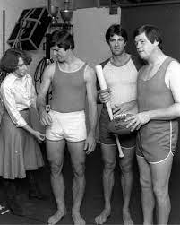
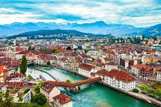
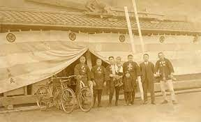
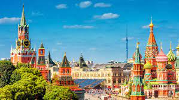
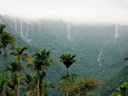
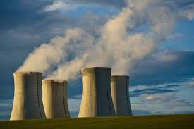
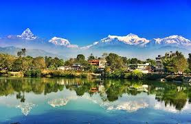

which country firt implemented GST

France was the first country to implement GST in 1954.
who invented periodic table

Dmitri Mendeleev invented the periodic table in 1869 as a framework which
later become the modern periodic table.
Reference
who Designed first underwear
The First underwear was designed by a apparel engineer in Coopers Inc.
Reference
who innvented exams
Henry Fischel first invented exams and it was first conducted in china.
Fastest Man On this Earth
Usain Bolt is the fastest man born on this earht till date.
His fastest timing was recorded as 9.58 seconds in 100 meter race.
Safest country in the world

Switzeland is the safest country in the world .
Expensive House in the world
You must be wondering sometimes that which the most expensive house in
the world .Yeah ,It is Antilia which is owned by MUukesh Ambani a billionaire
from india .The estimated worth of antilia is approximately 1 billion.
First building that was of 100 floor

The Empire State Building was the first building to have over 100 floors .And not only this it was the
tallest building on the earth from 1931 to 1972.
Father of Elon Musk
As of now elon musk is the richest man born on this Earth .But do you
know that his father Errol musk was an electrochemical engineer,pilot,sailor and also owner of
Zambian emerald mine near Lake Tanganyika.
Oldest operating company in the world

You must have struck a thought that which is the oldest compnay in the world
which is still operating ?yes, it is KONGO GUMI .It was established in 578bc. And
it specialises in the construction of temples and shrines.
Russia

Russia is world's largest country,it occupies one -tenth of all the land on the
Earth.It has 11 time zones across two continents (Europe and Asia) and has
shores on the three oceans -Atlantic,pacific,arctic Ocean.
Meghalaya

Meghalaya a state in india
has won the Guinness world record title for the
wettest place on the earth,with about 11,873 millitres of rain annually.
The monsoon season lasts six months ,so make sure you pack an ambrella!
Pakistan

Nuclear weapon is the key equipment for the most of the coutries defence
Pakistan which is located in souht asia become the world's First Islamic
country to attain nuclear power.
London
London is the smallest city in england !!!!
Yeah that's absolutely True .
The city which most of us know today is called Greater London whereas London is
the small portioon of the greater london .It has a population of only 9,123,making
it the smallest in England.
Nepal

Nepal which is considered to the one of the most peaceful country in the world
was closed off from outside the world during Rana regime (1846-1950s).
This was done to pursue the policy of isolation from the external influences
in order to maintain its independence during the British colonial era in souht
Asia.
Japan is ageing
When it comes to japan people relate it with Technology and its emmense soft power
around the worls.But Do you know japan is considered to the oldest country in the world.
28% of the japanese population is aged 65 and older ,the highest proportion in the world .
Further japan have appoximately 70,000 people who are above 100 years.